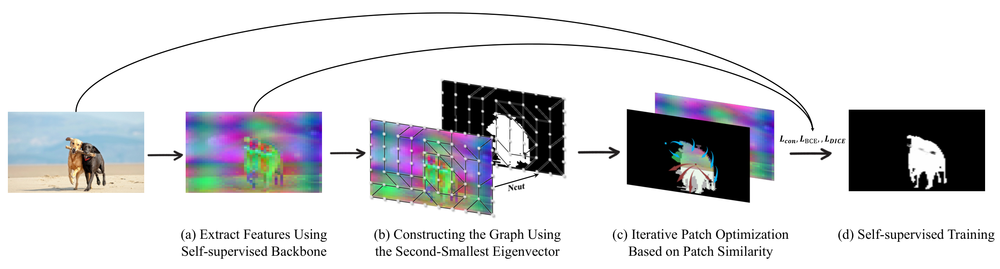
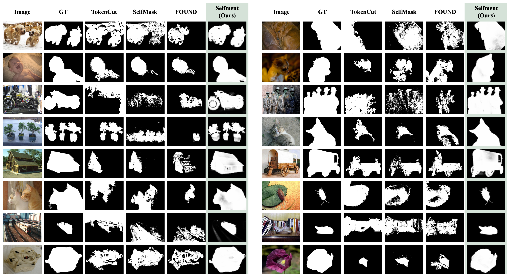
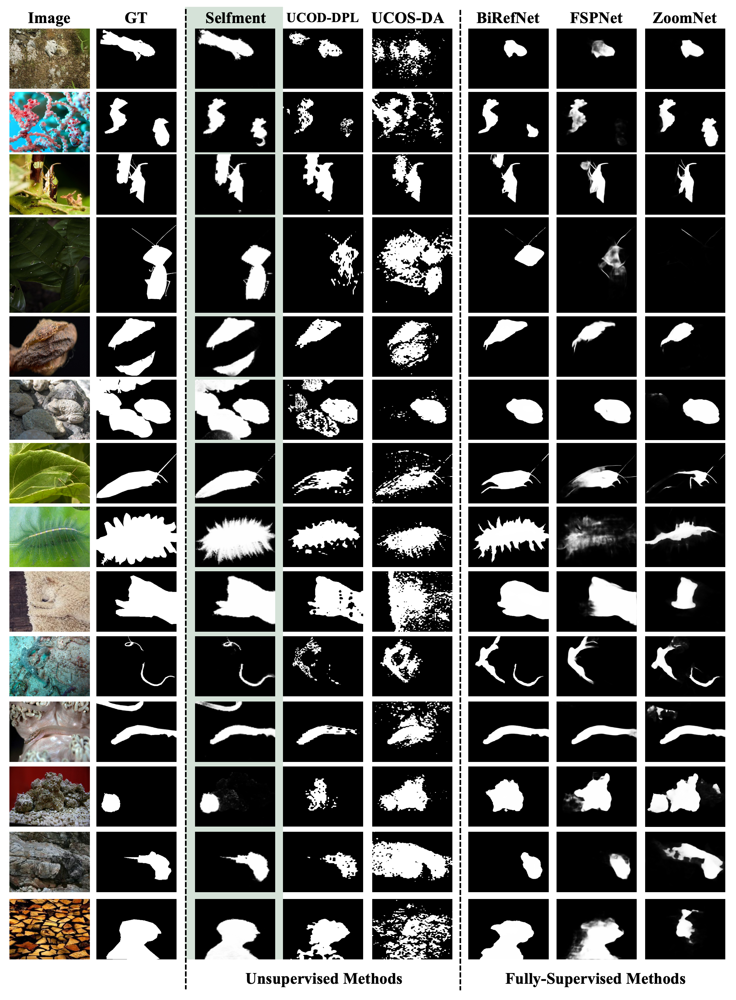
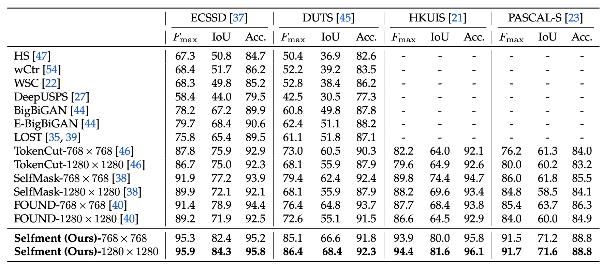
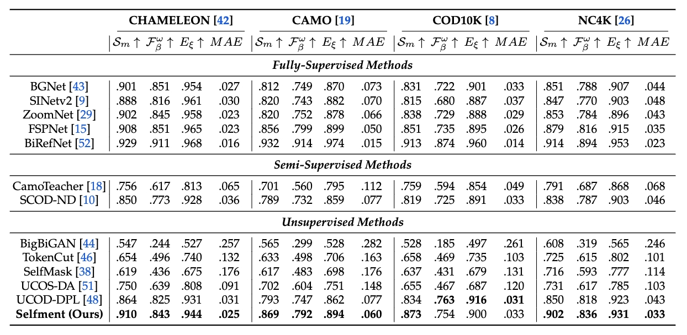

In this work, we introduce Selfment, a fully self-supervised framework that segments foreground objects directly from raw images without human labels, pretrained segmentation models, or any post-processing. Selfment begins by constructing a patch-level affinity graph from self-supervised features and applying Normalized Cut to obtain a coarse foreground-background separation. We then propose iterative patch optimization, a feature-space refinement algorithm that progressively enhances spatial coherence and semantic consistency. The resulting masks then serve as supervisory signals for training a lightweight segmentation head using contrastive and region-consistency objectives, enabling the model to learn stable object representations. Despite its simplicity and complete absence of manual supervision, Selfment sets new state-of-the-art results across multiple benchmarks.

Selfment starts from dense patch features extracted by a frozen self-supervised backbone. These features define a patch-level affinity graph, where Normalized Cut provides a semantically grounded but coarse foreground-background partition. To improve mask quality, IPO repeatedly updates foreground and background centroids in the normalized feature space and realigns patch labels according to semantic similarity while preserving orientation consistency. The resulting pseudo-masks supervise a compact segmentation head trained with binary cross-entropy, Dice, and contrastive objectives. This converts raw self-supervised features into stable object-aware representations without annotated masks, external segmentation models such as SAM, or test-time refinement.




@article{you2026learning,
title = {Learning Accurate Segmentation Purely from Self-Supervision},
author = {You, Zuyao and Wu, Zuxuan and Jiang, Yu-Gang},
journal = {ECCV},
year = {2026}
}